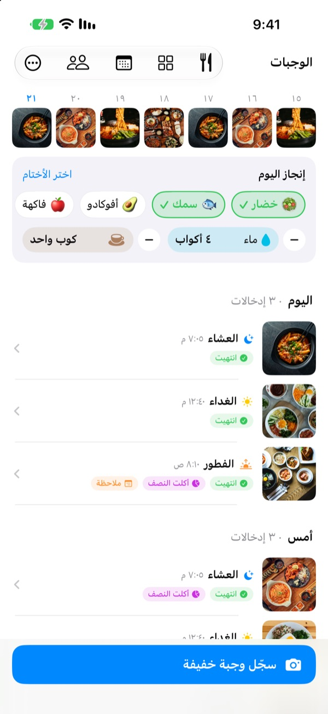
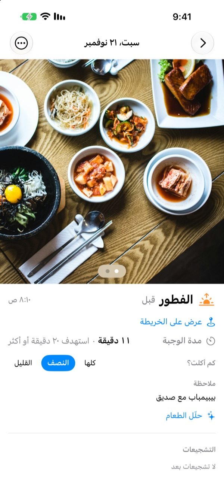
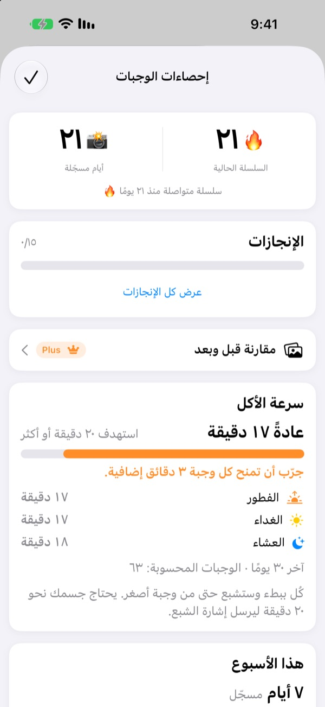
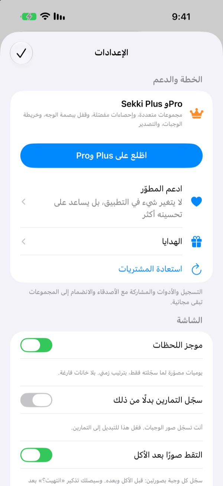

صورة واحدة قبل الأكل.
وهذا كل التسجيل.
ينظر Sekki إلى وقت التقاط الصورة ويضعها في الفطور أو الغداء أو العشاء أو الوجبة الخفيفة. سجّل وجبة واحدة فقط في اليوم وتستمر سلسلتك.
التسجيل والإحصاءات والأدوات والمشاركة مع الأصدقاء كلها مجانية.

جرّب تسجيل وجبة
اختر وقتًا واضغط زر التسجيل. كما في التطبيق تمامًا، يحمل الزر اسم وجبة ذلك الوقت مسبقًا.
هل تركت يوميات الطعام بعد ثلاثة أيام؟
تفوّت الفطور مرة، وتنسى العشاء مرتين، فتبدأ الخانات الفارغة بإزعاجك حتى تحذف التطبيق. في Sekki لا توجد خانات فارغة. تتراكم الوجبات التي تسجّلها فقط بترتيبها، وصورة واحدة تكفي ليُحسب اليوم.
صوّرها، وتُصنَّف الوجبة
يضع Sekki كل صورة في الفطور أو الغداء أو العشاء أو الوجبة الخفيفة حسب وقت التقاطها. أضف صورة قبل الأكل وبعده، أو سجّل بلا صورة، أو دوّن ملاحظة.
ويتعرّف على الطعام على جهازك نفسه مجانًا، وصورك لا تغادر هاتفك أبدًا.

سجل لا ينقص أبدًا
وجبة واحدة في اليوم تكفي لتستمر سلسلتك، وعدد أيامك المسجّلة لا ينقص أبدًا. وتعرض الإحصاءات الأسبوعية والشهرية كم يومًا وكم وجبة سجّلت بدل نسبة الإنجاز.
وتتجمّع في الطريق إنجازات مثل «7 أيام متتالية» و«الطائر المبكر».

الوجبات التي تختارها فقط، دون فتح التطبيق
اختر الوجبات التي تريد التذكير بها، وحدّد أوقاتًا تناسب يومك. التقط صورة قبل الأكل، وسجّل انتهاء الوجبة مباشرة من الإشعار.
سجّل بزر الإجراءات أو Siri أو الاختصارات أو أداة الشاشة الرئيسية، وأضف أصدقاءك بالرمز لتتبادلوا التشجيع بالإيموجي والتعليقات.

ابدأ في ثلاث خطوات
- 1
اختر وجباتك
عند فتح Sekki أول مرة، يسألك عن الوجبات التي تريد التذكير بها. ويمكنك تغييرها في أي وقت من الإعدادات.
- 2
صوّر قبل أن تأكل
يعرض زر التسجيل وجبة الوقت الحالي مسبقًا. اضغطه والتقط الصورة، وانتهى الأمر.
- 3
اضغط حين تنتهي
اضغط «انتهيت» في الإشعار أو الأداة، أو أضف صورة بعد الأكل.
التسجيل دون فتح التطبيق
- الإشعار
- بعد صورة ما قبل الأكل، سجّل «انتهيت» مباشرة من التنبيه
- أداة الشاشة الرئيسية
- شاهد عدد وجبات اليوم والوجبة التي تتناولها، ثم اضغط «انتهيت»
- أدوات شاشة القفل
- عرض مستطيل ودائري وسطري لسجل اليوم
- زر الإجراءات · Siri · الاختصارات
- سجّل «انتهيت» بضغطة واحدة أو جملة واحدة
- الحفظ في الصور
- فعّله من الإعدادات لتحتفظ بألبومي Sekki منفصلين للوجبات والتمارين
- وضع التمارين
- تُحفظ التمارين منفصلة عن الوجبات، مع عددها هذا الشهر بنظرة واحدة
يتطلب زر «انتهيت» في الأداة iOS 17 أو أحدث.
التسجيل مجاني. وSekki Pro يأخذك أبعد.
مجاني
- التسجيل بالصور مع تصنيف الوجبات تلقائيًا، وصور قبل الأكل وبعده، والملاحظات
- السلاسل المتتالية، وإجمالي الأيام المسجّلة، والإحصاءات الأسبوعية والشهرية، والإنجازات
- تذكيرات للوجبات التي تختارها، وتسجيل «انتهيت» دون فتح التطبيق
- الأدوات وزر الإجراءات وSiri والاختصارات
- مشاركة الوجبات والتمارين مع الأصدقاء، والتشجيع بالإيموجي والتعليقات
- إنشاء مجموعة واحدة، والانضمام إلى ما تشاء من المجموعات
- تحليل الطعام على الجهاز
Sekki Pro
- مجموعات متعددة للعائلة أو العمل أو رفاق النادي
- قارن وجباتك قبل بضعة أسابيع بوجبات اليوم جنبًا إلى جنب
- اطّلع على أكثر الأطعمة التي تأكلها
- اقفل التطبيق ببصمة الوجه أو بصمة الإصبع
اشتراك سنوي أو شهري، أو شراء واحد مدى الحياة
يتجدد الاشتراك تلقائيًا ما لم تُلغه قبل 24 ساعة على الأقل من نهاية الفترة. ألغِه في أي وقت من الإعدادات > حساب Apple > الاشتراكات. شروط الخدمة: m1zz.github.io/RoutineCamera/ar/terms.html
أسئلة
أين تُحفظ صوري؟
على جهازك. فعّل «احفظ في الصور تلقائيًا» من الإعدادات لتحتفظ بها أيضًا في ألبومات Sekki في تطبيق الصور. وما دامت «مشاركة وجباتي» مفعّلة (وهي مفعّلة في البداية)، تُرفع إلى iCloud ليراها الأصدقاء الذين تضيفهم. ويمكنك إيقافها من الإعدادات > الحساب والمشاركة.
كيف أضيف أصدقاء؟
في شاشة الأصدقاء، شارك رمز الصداقة المكوّن من 6 خانات وأدخل رمز صديقك. ويمكنك لصق عدة رموز دفعة واحدة مفصولة بفواصل.
كيف أشجّع صديقًا؟
افتح وجبة صديقك واترك إيموجي أو تعليقًا قصيرًا. وإن لم يسجّل وجبة بعد، اضغط الخانة الفارغة لترسل له تنبيهًا لطيفًا.
هل تنقطع سلسلتي إذا فاتتني وجبة؟
لا. سجّل أي وجبة واحدة في ذلك اليوم، بما فيها الوجبات الخفيفة، وتستمر السلسلة. وحتى إن فاتك يوم كامل، لا ينقص عدد أيامك المسجّلة أبدًا.
لا تصلني الإشعارات.
تأكّد من السماح بإشعارات Sekki في إعدادات iOS > الإشعارات، ومن تسجيل جهازك الدخول إلى iCloud. ويمكنك تغيير أوقات تذكير الوجبات من إعدادات التطبيق.
هل يرسل تحليل الطعام صوري إلى خادم؟
لا. يعمل التحليل على جهازك، فلا تغادر صورك هاتفك أبدًا. وهو مجاني بلا حدود.
كيف أحذف حسابي وبياناتي؟
اذهب إلى الأصدقاء > الحساب > حذف الحساب. يُحذف حسابك وبيانات الوجبات المحفوظة على الخادم ولا يمكن استعادتها. وإن واجهتك أي مشكلة، راسلنا بالبريد.
كيف ألغي اشتراكي؟
من الإعدادات > حساب Apple > الاشتراكات. يتجدد الاشتراك تلقائيًا ما لم تُلغه قبل 24 ساعة على الأقل من نهاية الفترة. أما الشراء مدى الحياة فيُدفع مرة واحدة.
لبلاغات الأخطاء واقتراحات الميزات وأسئلة الحساب: راسلنا على leeo@kakao.com أو عبر رسالة على Instagram إلى @lee25_ios. نرد عادةً خلال يوم أو يومين.